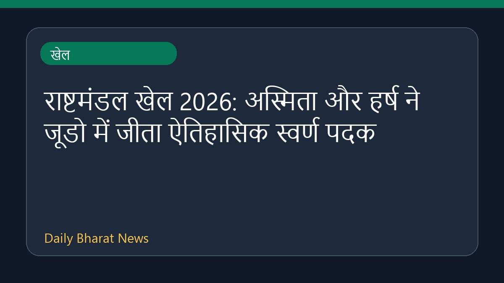

राष्टमंडल खेल 2026: अस्मिता और हर्ष ने जूडो में जीता ऐतिहासिक स्वर्ण पदक

ग्लासगो में चल रहे राष्ट्रमंडल खेल 2026 में भारत के जूडो खिलाड़ियों ने शानदार प्रदर्शन करते हुए इतिहास रच दिया है। त्रिपुरा की 23 वर्षीय अस्मिता डे और हर्ष सिंह ने अपने-अपने वर्ग में स्वर्ण पदक हासिल किए हैं। पिता के निधन के सात महीने बाद अस्मिता ने यह ऐतिहासिक उपलब्धि हासिल की है, जो भारत का जूडो में पहला राष्ट्रमंडल खेल स्वर्ण है। इसके अलावा, यामिनी मौर्या ने भी बेहतरीन प्रदर्शन करते हुए देश के लिए रजत पदक जीता है। प्रतियोगिता के इस दिन भारतीय खिलाड़ियों के शानदार प्रदर्शन से देश का नाम रोशन हुआ है।